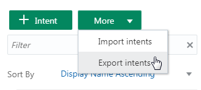
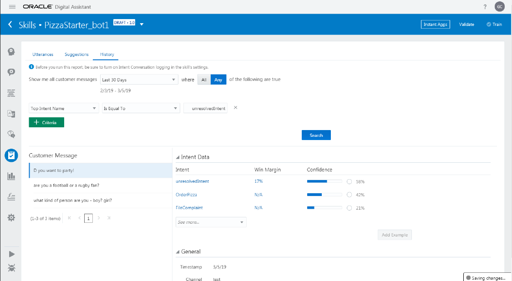

Best Practices for Buiding and Training Intents
Best Practices for Buiding and Training Intents
Tutorial by Grant Ronald, Oracle
March 2019, Oracle Digital Assistant version 19.1.3
 Before You Begin
Before You Begin
This 45 minute tutorial demonstrates some good practices for training and improving your intents.
Background
The purpose of this lab is to become familiar with tips and techniques for training and testing your skills. Specifically, you will add utterances to the skill to train it to understand a simple pizza ordering use case. Then you'll work with a colleague to iteratively test your skill, adding more test data as you go along to fine-tune intent resolution.
We’ll focus on these intents:
FileComplaint– used when the customer has an issue that needs to be resolved, probably by a live agent.OpenFranchise– allows the customer to inquire about opening up a franchise to sell pizzas online.TrackOrder– used when the customer wants to check the status of an order, cancel and order, or check the progress of an order.
What do you need?
- Access to an Oracle Digital Assistant instance.
- Download
PizzaStarter_bot1.zipwhich has the basic intents for testing.
 Clone the
Clone the PizzaStarter_bot1 skill
We'll start with a skill that has been pre-populated with a few intents. Since you won't be the only one using your instance, you'll want to create your own copy of that skill to work with.
- Open the main menu by clicking
 and select Development > Skills.
and select Development > Skills. - Within the tile for the
PizzaStarter_bot1skill, click , select Clone, and name the clone<YourInitials>_PizzaStarter_bot1.For example:
JS_PizzaStarter_bot1. - Locate the tile for your clone of the skill (using the Search field might help) and click it to open the skill.
 Turn On Conversation Logging
Turn On Conversation Logging
We'll log the conversations with the skill in order to use those inputs to retrain and test the skill.
- In the left navigation of your skill, click
 .
. - Select the General tab.
- Set the Enable Conversation Logging switches for Intent Conversation, Q&A Conversation, and Skill Conversation to ON.
 Create Utterances and Do a Round of Batch Testing
Create Utterances and Do a Round of Batch Testing
Next we'll prepare some data so we can run reproducible tests to help measure the success of the skill in understanding a conversation with a user. You can do batch testing by uploading a .csv file that contains test phrases and the intents to which they should resolve.
As a starting point, let's export the intents of the skill to get a .csv file with the correct format.
- Select
 and select More > Export intents.
and select More > Export intents.
 - Save the files as
batchtest1.csv. - In Notepad or a similar text editor, write phrases that you think would be representative utterances for the
FileComplaint,OpenFranchise, andTrackOrdersintents.Write 10 utterances for each of those intents.
- For each intent, add 7 of the utterances you have just written to the skill by doing the following:
- Selecting the intent.
- Within the Examples area, pasting the utterances.
- Clicking Train, leaving Trainer Ht selected, and clicking Submit.
- Add the remaining 3 utterances for each intent to the
batchtest1.csvfile by:- Copying the utterances into the first column.
- In the second column of each row, entering the name of the intent that the utterance is supposed to resolve to.
- Click .
- Select Intent.
- Slide the Batch switch to ON.
- Click Load.
- Drag
batchtest1.csvinto the Load Batch dialog and click Test.
Take a look at the results and take note of anything that you find surprising.
What you just did. When developing a new skill it is likley that you don't have any existing training utterances so you have to synthesize utterances to train the model. Here you have undertaken a good practice by using some utterances to train the model and some which have been used for batch testing.
By using some of the phrases for batch testing you are always able to test your intents and compare to whether these phrases are resolving to the intents you expect - ultimately you want to show that your model is resolving more and more phrase correctly over time. This is incredibly important as you go through your skill development where you will add more training utterances and/or change the model as more people use it.
 Iteratively Test Your Intents
Iteratively Test Your Intents
At this point, you have done one round of testing. To make sure that you have a robust training corpus of utterances, you'll want to do several more rounds and make any necessary adjustments to your utterances as you go along. This is iterative approach is a good practice for your skill development.
As part of this, you'll want to get other people involved in training your skill since phrases you think of to match an intent will probably vary from what other people come up with.
- With the help of your instructor, find a test partner.
- Have your partner enter phrases of their own in the tester for your skill (3 phrases for each of the 3 intents). You'll do the same for your partner's skill. To use the tester:
- Click
 .
. - Type a phrase in the Message field and press Enter.
- Click
- Once your partner has finished entering phrases, open the skill's conversation logs by:
- Clicking to navigate back to the page that displays all of the Skills.
- Within the tile for your Skill, clicking and selecting Export Conversation Log.
- In the Export Skill dialog, selecting Intent Conversation Log.
- In the log, see what intents that your partner's utterances were assigned and see if they are what you would have expected.
Using Logs to Retrain the Skill
Using the phrases your testing partner added, you can do some further augmentation of your corpus, retrain your skill, and test the results. Let's do that now.
- Go through the utterances and identify any that you think won't work, and replace them or make changes that you see fit.
- For each intent:
- Copy 2 of the utterances created by your test partner to your clipboard.
- Within the skill, select the intent.
- Within the Examples area, paste the utterances.
- Click the Train button.
- Leave Trainer Ht selected and click Submit.
- Create a copy of
batchtest1.csvand save it asbatchtest2.csv. - For each intent, add the remaining utterance created by your test partner to
batchtest2.csv. - Click .
- Select Intent.
- Slide the Batch switch to ON.
- Click Load.
- Drag
batchtest2.csvinto the Load Batch dialog and click Test. - Evaluate the results of the new test.
- Has the inclusion of new phrases helped in the intent resolution?
- Are you getting better results?
- Are you seeing obvious misclassifications?
We'll look at fine tuning these later in the lab.
- With your partner, or perhaps a new partner, repeat the exercises in this section with three more utterances for each intent.
What you just did. Ideally you would want your skill to get smarter over time, but to do so you need to train it to be smarter. Every time your skill is used you should be harvesting new training and test utterances from the conversation logs. This is an essential best practice for any skill development.
 Train the Skill to Handle Spam
Train the Skill to Handle Spam
Now let's spend some time on the question of spam or other misuse of the skill. Up to 40% of a skill's workload may have nothing to do with the skill's intended use, and the skill needs to be able to gracefully handle this. Furthermore, training your skill to understand phrases that are outside of the use case has the benefit of helping it to disambiguate the intents it is supposed to handle.
- Test the skill with 10 random phrases such as “and she is buying a stairway to heaven”, “tell me a joke”, and “are you a lady bot” by doing the following:
- Clicking .
- Typing a phrase in the Message field and pressing Enter.
Repeat this step until you have entered 10 different random phrases.
- Clicking
- Open the conversation logs by:
- Clicking to navigate back to the page that displays all of the Skills.
- Within the tile for your skill, clicking and selecting Export Conversation Log.
- In the Export Skill dialog, selecting Intent Conversation Log.
- In the log, see if any of the phrases are resolved to any of your intents.
Spoiler alert: some of them probably are. You'll need to train the skill to recognize phrases that are outside of the scope of the skill and deal with them appropriately.
The unresolvedIntent Intent
To handle spam and other interactions for which the skill wasn't specifically designed, create a new intent called unresolvedIntent.
- With your skill open, click .
- Click + Intent.
- In the Name field type
unresolvedIntent. - In the Examples area for the intent, enter 7 of the random utterances that you just evaluated in the log.
- Click Train and retrain the skill.
- In the most recent version of your
batchtest.csvfile, add the three remaining phrases and specifyunresolvedIntentas the intent. - Click .
- Select Intent.
- Slide the Batch switch to ON.
- Click Load.
- Drag your batchtest file into the Load Batch dialog and click Test.
- Evaluate your test results.
- Try testing with the other training model by:
- Clicking Train again, selecting the other Intent Training model (probably Trainer Tm, and clicking Submit.
- Clicking .
- Selecting Intent.
- Sliding the Batch switch to ON.
- Clicking Load.
- Dragging your batchtest file into the Load Batch dialog and clicking Test.
- Compare the results with your previous results.
Now, for good measure, do additional testing with your test partner:
- Have your partner enter 10 random phrases into the tester for your skill.
- Open the conversation logs to see what intents the phrases resolved to.
- Open your skill, and select the
unresolvedIntentintent. - Repeat steps 4-14 above to augment the
unresolvedIntentwith 7 of thew new phrases and add 3 to the batch test file.
What you just did. As well as training your model to understand your intents, it is also a good practice to train the model to understand what is not an intent. You can do this by defining the unresolvedIntent which contains phrases unrelated to the intents that support the use case.
By adding this you are helping your skill understand non-usecase specific phrases as well as helping avoid these phrases being incorrectly resolved to intents.
 Manually Improve the Skill
Manually Improve the Skill
In the presentation associated with this lab you learn of a number of techniques to improve your skill intents. Based on those lessons look at how you might improve some of the intent resolution. For example, you could:
- Emphasize specific key phrases.
- Repeat key utterances with some slight variations.
- Check where you think utterances could apply to different intents.
- Try out some ideas and rerun your tests to see if that helps.
Note: Ultimately the best data for training your skill will come from real user utterances. Furthermore, in most cases trainer Tm is better suited for resolving real-world phrases, however it does require more sample utterances to give those better resuts.
In parallel with applying above techniques, you'll probably want to run and evaluate quality reports.
To run a quality report:
- With your skill open, click .
- Click Run Report.
When you run a quality report it performs a random 80:20 split of utterances, using 80% subset to train with and 20% to test with. Since the split is random, the test results may differ every time you run the report.
Besides obvious problems such as misclassifications, here are some things to look out for in quality reports:
- Which of your phrases are resolving to
unresolvedIntent. This gives you a way of checking that what comes back as unresolved is in fact a phrase which should be handled by a generic catch-all intent.To find out, click the History tab and do a search for matches to
unresolvedIntent, like the one shown in this screenshot:
 - Which of your phrases are resolving to the correct intent, but with a narrow win margin? Such phrases may need work.
To investigate, do a search with the filter set to Win Margin, the operator set to Is Less Than, and the value set to a low percentage, such as 20% (as shown in this screenshot):

Notes
- At the time of writing this lab, the History feature only works against input through the skill Conversation tester (clicking ), not the intent or batch tester (clicking ). This means that you might have to manually enter some of your phrases in the Skill Conversation tester.
- Since quality reports do an 80:20 split between training and tester, some of the data you would normally use to train an intent will not be used as training material in the context of the report, which could result in misclassifications. For such misclassifications, you need to determine if they are simply a result of the way quality reports work or whether they are real and you need to add additional utterances.
- You may find some misclassification but decide that, if it resolves to a low percentage, it is acceptable.
Back to the Index Page